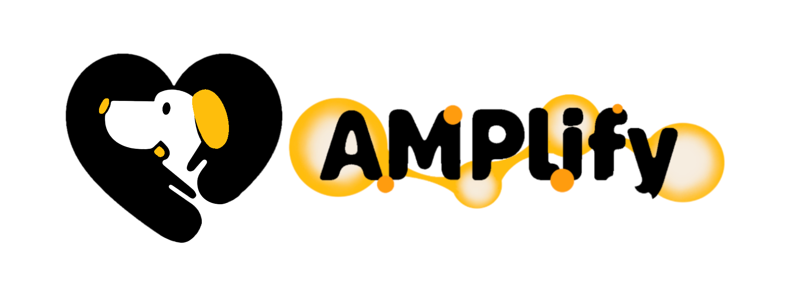
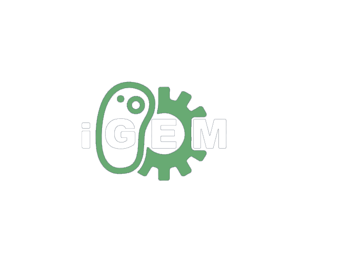

HP Compass Dashboard
Automated classification, L0-L4 loop status, priority scoring, next-step recommendation, and Stakeholder-Feedback-Action graph for AMPlify Human Practices.
Stakeholder-Feedback-Action Graph
Ranked HP Loops
Timeline